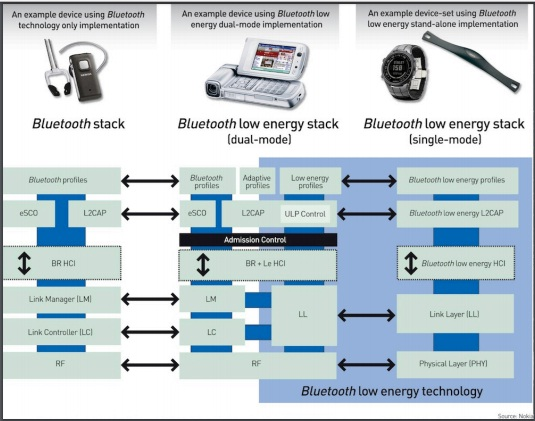
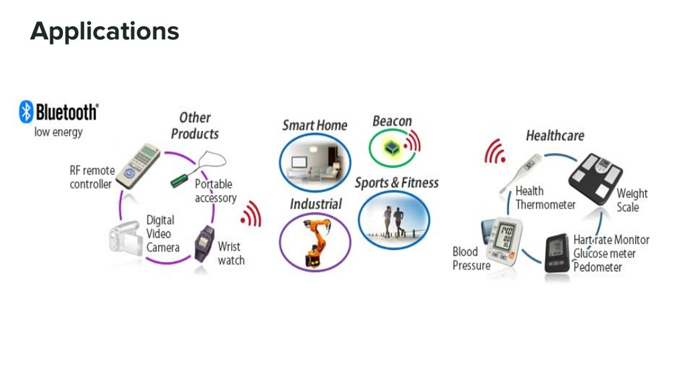

Resumo: Este trabalho foi feito de modo a abordar o Bluetooth Low Energy (previamente conhecido por Bluetooth Smart), uma modificação da tecnologia Bluetooth clássica feita com o intuito de reduzir o gasto energético. Veremos a história do desenvolvimento do Bluetooth, desde suas versões iniciais até as mais recentes; também teremos uma breve descrição do Low Energy, e de como ele difere da tecnologia clássica. Passaremos por sua arquitetura, e logo como ele foi implementado, e por fim veremos algumas das aplicações para as quais ele está sendo utilizado na atualidade. Concluiremos o trabalho com 5 perguntas e respostas e as referências utilizadas durante seu processo de criação.
História
O desenvolvimento do Bluetooth se iniciou em meados da década de 1990, buscando uma forma de permitir a comunicação entre celulares e acessórios (como fones de ouvido) sem necessitar de cabos para ligá-los. A ideia era realizar essa comunicação através de ondas de rádio de baixo custo, e foi inicialmente concebido e financiado pela empresa Ericsson. Logo o projeto começou a receber apoio de outras grandes empresas, e foi assim criado o Bluetooth SIG (Bluetooth Special Interest Goup) em 1998; apesar de ser inicialmente formado pelas empresas Ericsson, Intel, IBM, Nokia e Toshiba, muitas outras aderiram com o passar do tempo.
O nome Bluetooth foi escolhido em homenagem ao rei viking Harald Bluetooth, conhecido por sua influência no processo de unificação da Escandinávia durante um período no qual a região era assolada por conflitos e guerras. Assim como o rei conseguira, essa nova tecnologia unificaria diferentes indústrias sob um mesmo método simples, barato e sem fio de comunicação. Foi também baseando-se nesse indivíduo que foi criado o logo do Bluetooth: ele nada mais é do que os caracteres rúnicos H e B (das iniciais de Harald e Bluetooth) sobrepostos.
Suas versões iniciais (denominadas 1.0 e 1.0B) apresentavam problemas na interoperabilidade entre dispositivos via bluetooth. Muitos desses problemas foram resolvidos e pequenas melhorias foram feitas nas subsequentes versões 1.1 e 1.2. A velocidade de transferência de dados na versão 1.2 era de 721 Kb/s.
As próximas versões a serem lançadas foram as 2.0 e 2.1, com a maior novidade sendo o EDR (Enhanced Data Rate), que aumentava a velocidade de transferência para até 2.1 Mb/s. A seguir foi lançado a versão 3.0, que novamente trazia maiores velocidades com o HS (High Speed), podendo atingir até 24 Mb/s de transferência de dados.
Em dezembro de 2009, foi anunciada a versão 4.0. O principal diferencial desta versão, e que será o foco abordado neste trabalho, é o LE (Low Energy). Este permite uma economia de energia muito maior comparado ao gasto energético das versões anteriores. Esta redução no gasto energético vem principalmente da introdução de um novo método de transferência de dados em rajada, ao invés da transmissão contínua utilizada anteriormente.
No fim de 2013, foram lançadas as especificações da versão 4.1. Esta foi uma revisão da versão anterior, que buscava tornar a tecnologia ainda mais acessível para dispositos que se enquadravam na área de Internet das Coisas.
O último upgrade à versão 4 foi apresentado no final de 2014. A versão 4.2 trazia ainda mais melhorias, desta vez destacando-se a implementação de um suporte ao IPv6 e a adoção de um novo método de criptografia, melhorando a segurança e garantindo que apenas dispositivos devidamente autorizados pudessem se conectar a outros.
Finalmente, a versão mais recente foi apresentada no fim de 2016. O Bluetooth 5 permitia a comunicação em distâncias de até 40 metros (sendo que os anteriores trabalhavam em média com até 10 metros), e velocidade de transferência por baixa energia de até o dobro da oferecida na versão 4.2, ou seja, de até 2Mb/s. Destaca-se que cada nova versão do Bluetooth se manteve compatível com as versões anteriores, então dispositivos utilizando Bluetooth 4.2 podem enviar e receber informações de outros utilizando Bluetooth 2.0 por exemplo; assim, novos dispositivos ainda possuem capacidade de transferir dados a mais de 20 Mb/s quando necessário ao se comunicar com Bluetooth 3.0 (desde que seja dual chip, como veremos a seguir), não desfrutando das vantagens de baixa energia ao operar desse modo.
Resumo das principais melhorias feitas no bluetooth com cada nova versão, até a 4.2. Retirado de: http://blueapp.io/blog/history-of-bluetooth/
Low Energy
O LE(Low Energy) é uma técnica que surgiu na versão 4.0 do Bluetooth. Enquanto versões mais antigas do Bluetooth, que passaram a ser conhecidas como "Bluetooth Clássico", eram comumente utilizadas em aplicações como fones de ouvido e auto-falantes sem fio, que requerem uma transmissão constante de dados, o foco do Bluetooth LE está em aplicações de curto alcance, baixa transferência de dados e maior vida útil de bateria. Alguns exemplos de aplicações seriam smart watches, sensores para Internet das Coisas, monitoramento de saúde e automação domiciliar. Estas e outras aplicações serão vistas com maior detalhes em seu respectivo tópico.
Como o nome indica, o baixo gasto de energia é seu aspecto mais importante, permitindo sensores em algumas aplicações funcionarem por múltiplos anos a partir de uma única bateria. Chips de bluetooth de baixa energia possuem um gasto energético consideravelmente menor que os de versões anteriores; esse menor gasto é obtido pois estes passam grande parte do tempo inativos, até que surja a necessidade de transferência de dados. Quando essa necessidade ocorre, o chip fica ativo, anuncia a necessidade de se comunicar com outro dispositivo, envia seus dados, e então volta à seu modo inativo. O tempo de setup e transferência dos dados pode ser de até 3ms, providenciando um método de operação de baixa latência que é eficiente para pequenas rajadas.
Breve comparação entre Bluetooth Clássico e o Bluetooth LE. Adaptado de: https://www.lsr.com/embedded-wireless-modules/bluetooth-module
Com a introdução da tecnologia, foram criados dois chips capazes de utilizar o Bluetooth Low Energy: chips de modo único (single mode) e de modo duplo (dual mode). Chips de modo único utilizam exclusivamente da tecnologia LE, sendo otimizados para a operação ULP (Ultra Low Power); entretanto, estes chips podem se comunicar somente com tecnologias que implementam o LE, não podendo se comunicar com versões que implementam apenas o Bluetooth clássico. Por outro lado, chips de modo duplo possuem a capacidade de comunicação tanto com a tecnologia do Bluetooth clássico quanto com os chips que implementam LE. No entanto, como eles precisam executar tanto as tarefas de Bluetooth de baixa energia como as do Bluetooth clássico, os chips de modo duplo não são otimizados para a operação ULP no mesmo grau dos dispositivos de modo único.

Chips de modo duplo usam a parte de Bluetooth de baixa energia de sua arquitetura para se comunicarem com dispositivos de modo único. Retirado de: https://www.eetimes.com/document.asp?doc_id=1278425
Os chips de modo único podem operar por longos períodos de tempo (meses ou até anos) a partir de uma bateria de célula tipo moeda. Em contraste, dispositivos que usam da tecnologia Bluetooth clássica (assim como os de modo duplo de Bluetooth LE) normalmente requerem a capacidade de pelo menos duas células AAA (que têm 10 a 12 vezes a capacidade de uma célula tipo moeda e tolerância de pico muito maior) e muitas vezes mais, para alimentá-los por dias ou semanas no máximo (dependendo da aplicação).
Arquitetura
A arquitetura da pilha de protocolos do Bluetooth LE é dividida em Host e Controller, e pode ser vista em mais detalhes na imagem abaixo.
Pilha de protocolos do Bluetooth LE. Retirado de: http://dev.ti.com/tirex/content/simplelink_cc2640r2_sdk_1_00_00_22/docs/blestack/html/ble-stack/index.html
Physical Layer (PHY)
Como foi criado com o intuito de ser utilizado internacionalmente, o Bluetooth LE opera no espectro ISM (Industrial Scientific Medical) de 2.4 GHz, atuando com 40 canais com 2 MHz de espaçamento. Dois tipos de canais são utilizados: canais de publicidade (advertising channels) e canais de dados (data channels). Canais de publicidade são utilizados para a descoberta de dispositivos Bluetooth e estabelecimento de conexão entre eles, enquanto canais de dados são usados para a comunicação bidirecional entre dois dispositivos conectados.
Três canais foram selecionados como canais de publicidade, e estes foram definidos em frequências com menor probabilidade de interferirem com redes Wi-Fi. Destaca-se que o Bluetooth clássico utiliza 32 canais, o que aumenta o tempo gasto buscando por dispositivos e consequentemente também aumenta o gasto energético.
Todos os outros canais foram definidos como canais de dados, e utilizam de um mecanismo conhecido por AFH (Adaptative Frequency-Hopping Spread Spectrum) de modo a reduzir problemas de interferência assim como outros problemas de comunicação sem fio. Este mecanismo determina qual dos 37 canais disponíveis será utilizado, mudando a seleção a cada determinado intervalo de tempo, através de uma sequência pseudoaleatória conhecida tanto pelo transmissor quanto pelo receptor.
Os canais de publicidade do Bluetooth LE foram escolhidos de modo a reduzir conflitos com Wi-Fi. Retirado de: https://www.eetimes.com/document.asp?doc_id=1278425
Todos os canais físicos utilizam modulação por GFSK (Gaussian Frequency Shift Keying), com índice entre 0.45 e 0.55, permitindo menor gasto energético e maior alcance. A taxa de transferência de dados é de 1 Mb/s para Bluetooth 4.0 até 4.2, e de 2 Mb/s para Bluetooth 5.
Link Layer (LL)
É através desta camanda que sé é controlado o estado de conexão do dispositivo. Esse controle é feito através da definição de cinco estados: Standby, Advertising, Scanning, Initiating e Connection.
Dispositivos inativos, ou seja, que não enviam nem recebem pacotes, estão em Standby. O processo de conexão entre dois dispositivos Bluetooth se inicia quando um dispositivo, denominado Advertiser, repetidamente envia pacotes para cada advertising channel, esperando até que receba resposta de algum outro dispositivo. Ao receber esses pacotes, um dispositivo pode atuar de dois modos: indicar que pacotes estão sendo recebidos e requisitar mais informações (sendo neste caso denominado Scanner), ou enviar uma mensagem de requisição de conexão de volta ao Advertiser (sendo então um Initiator). Deste modo, o Advertiser e o Initiator iniciam uma conexão (entrando assim em estado Connection) e passam então a poder transferir dados entre si pelos canais de dados.
Ao se conectarem, os dispositivos Bluetooth criam uma rede denominada piconet. Esta rede é caracterizada pela presença de um mestre (master), responsável por regular a transmissão de dados, a sincronia entre os dispositivos e supervisar a conexão, enquanto os demais dispositivos são considerados escravos (slaves). Os escravos, de modo a poupar energia, usualmente permanecem inativos, checando se pacotes foram enviados em intervalos pré-determinados pelo mestre. Ao se conectarem, o Initiator assume o papel de mestre e o Advertiser o de escravo.
Diferentemente do Blueetooth clássico, que criava piconets com obrigatoriamente um mestre e até sete escravos, o Bluetooth LE aumentou consideravelmente o tamanho destinado ao endereçamento (de 3 bits para 48 bits), o que possibilita um mestre lidar com potencialmente bilhões de escravos simultaneamente.
Host Controller Interface (HCI)
Esta camada atua na comunicação entre o Host e o Controller, transportando comandos e eventos entre ambos.
Logical Link Controller And Adaptation Protocol (L2CAP)
Essa camada realiza a transferência dados entre as camadas superiores do Host e camadas inferiores da pilha de protocolos. Ela é responsável pela capacidade de multiplexação de protocolo, segmentação e operação de remontagem para dados trocados entre o Host e a pilha de protocolos. O L2CAP permite que protocolos e aplicativos de alto nível transmitam e recebam pacotes de dados da camada superior de até 64 KB. A versão implementada no Bluetooth LE é uma otimizada e melhorada do protocolo de mesmo nome utilizado no Bluetooth clássico.
Security Manager Protocol (SMP)
Este protocolo oferece atua de modo que a troca de informação seja feita de forma segura. Os serviços oferecidos por esta camada incluem autenticação e autorização de dispositivos, e verificações de integridade, confidencialidade e privacidade dos dados trocados.
Attribute Protocol (ATT)
Esse protocolo define a comunicação de dois dispositivos: um sendo o servidor e o outro o cliente. O servidor mantém uma série de atributos, que são estruturas de dados que armazenam a informação gerenciada pelo GATT, o protocolo acima do ATT. O papel de servidor ou cliente é determinada pelo GATT, e não depende dos papéis de mestre e escravo. O cliente pode requisitar atributos do servidor, assim como enviar comandos ao servidor de modo a escrever novos valores de atributo.
Generic Attribute Profile (GATT)
O GATT define uma estrutura que usa o ATT para a descoberta de serviços e a troca de características de um dispositivo para outro através de um link de baixa energia. Uma característica é um conjunto de dados que incluem um valor e suas propriedades, estes guardados em atributos. Por exemplo, um servidor executando um serviço de sensoriamento de temperatura é responsável por lidar com a característica "temperatura", que usa um atributo para descrever o sensor, outro para o valor medido e outro para a unidade de medida utilizada.
Visão da estrutura utilizada pelo GATT. Retirado de: https://www.bluetooth.com/specifications/gatt/generic-attributes-overview
Generic Access Profile (GAP)
Além de determinar os papéis do dispositivo e os procedimentos necessários para a descoberta de outros dispositivos e serviços, o GAP também trata do controle da conexão estabelecida, permitindo a comunicação direta com aplicação e perfis. No Bluetooth LE, ele pode classificar o dispositivo como um dentre quatro papéis: Broadcaster, Observer, Peripheral ou Central. Destes, Broadcasters e Observers não podem se conectar a outros dispositivos, limitando-se somente a enviar dados nos canais de publicidade e a buscar por dados nesses canais, respectivamente. Já os outros dois, Peripherals e Centrals, podem se conectar, com os dispositivos centrais atuando como mestres e periféricos como escravos.
Aplicações
A tecnologia Bluetooth, ao permitir que dispositivos se conectassem sem a necessidade de estarem fisicamente ligados, tornou possível o desenvolvimento de um grande número de aplicações. Tendo isso em mente, e de modo a garantir a funcionalidade e compatibilidade dos mais variados tipos de dispositivos, o Bluetooth SIG criou uma gama de perfis para serem seguidos, com um perfil sendo especificações de interface para a comunicação entre dispositivos baseados em Bluetooth.
Por exemplo, o Bluetooth pode ser usado para transferir informações entre telefones ou conectar dispositivos como mouses e teclados à computadores. Essas diferentes funções são controladas por perfis diferentes e fornecem aos dispositivos envolvidos as informações sobre a melhor forma de transmitir dados para realizar a função desejada. Destaca-se que mais de um perfil pode ser implementado em um único dispositivo. Todos os perfis são baseados no GAP; este define, como visto na arquitetura, como duas unidades Bluetooth podem descobrir e estabelecer uma conexão entre si.
O principal diferencial relacionado aos perfis que ocorreu com a criação do Low Energy foi a adição do GATT. Todas as aplicações de baixa energia atualmente são baseadas neste perfil, uma especificação genérica para o envio e recebimento de pequenos pedaços de data conhecidos como "atributos" por um link de baixa energia.
Como o Bluetooth pode ser aplicado das mais diversas formas, diversos perfis que possibilitam essas aplicações também foram criados. Dentre os mais utilizados, destacam-se: A2DP (Advanced Audio Distribution Profile), AVRCP (Audio/Video Remote Control Profile), HFP (Hands-Free Profile), FTP (File Transfer Profile), HID (Human Interface Device Profile), PXP (Proximity Profile), HDP (Health Device Profile) e MESH (Mesh Profile).
Frequentemente utilizados em conjunto, A2DP e AVRCP atuam em dispositivos que emitem áudio através do Bluetooth. São utilizados frequentemente em fones de ouvido e em sons de carro, por exemplo. Enquanto o A2DP trata do conteúdo do áudio em si, AVRCP trata de comandos como pausar e reiniciar o som, aumentar e diminuir o volume, dentre outros.
HFP é utilizado principalmente para realizar chamadas telefônicas enquanto dentro de um veículo. FTP, por sua vez, é utilizada para a transferência de arquivos entre dispositivos Bluetooth. HID é utilizado para a conexão de dispositivos como teclados, mouses e controles, e PXP permite monitorar a distância entre dois dispositivos Bluetooth.
A área de saúde é uma das que mais faz uso das vantagens oferecidas pelo Bluetooth. Vários perfis são baseados no HDP; dentre eles destacam-se: BLP (Blood Pressure Profile), para medição da pressão sanguínea; HTP (Health Thermometer Profile), para medição da temperatura corporal; HRP (Heart Rate Profile), para dispositivos que medem o batimento cardíaco. A principal função do HDP é facilitar a recepção e transmissão de dados de dispositivos médicos.
Adotado em julho de 2017, o MESH é um perfil para comunicação de muitos-para-muitos através de Bluetooth. Ele suporta encriptação de dados, autenticação de mensagens e destina-se a construir sistemas eficientes de iluminação inteligente e redes IoT.

Alguns exemplos de aplicações do Bluetooth LE. Retirado de: https://www.slideshare.net/FREEZ7/bluetooth-low-energy-a-case-study
Conclusão
A tendência dos avanços tecnológicos é procurar fazer muito com cada vez menos recursos. Para isso, procura-se cada vez mais otimizar o uso da energia nos mais diversos ramos da tecnologia, e com o Bluetooth não é diferente. Se o Bluetooth auxilia na independência de meios físicos para conexões, o Low Energy veio para ampliar ainda mais o uso desta ferramenta. Com uma arquitetura simples e barata, com tamanho reduzido e baixo consumo energético, o Bluetooth LE se adapta bem a sensores, relógios, aparelhos de saúde, e principalmente na cada vez mais influente internet das coisas. É um passo a mais na caminhada humana para um mundo sem fronteiras.
FAQ
Quais são os modos de conexão do dispositivo BLE?
O modo "escravo" que se conecta e envia dados a apenas um dispositivo denominado "mestre", e o modo "mestre" que pode se conectar a um ou vários dispositivos "escravos".
Cite alguns motivos que tornam a tecnologia BLE econômica em energia.
Possui baixa taxa de tráfico, com transmissões da ordem de milisegundos e possui um mecanismo que deixa o sistema no estado "dormindo" na maior parte do tempo.
O Bluetooth LE é um substituto do Bluetooth clássico?
Não. O Bluetooth clássico trabalha com tráfego contínuo enquanto que o Bluetooth LE tem tráfego baixo e de transmissões curtas para diminuir seu consumo de energia. Assim, os propósitos deles são distintos, cabendo a utilização de uma ou outra de acordo com a finalidade e necessidade do produto em questão.
É possível haver interferência entre um sinal Bluetooth e um sinal de Wi-Fi? Se sim, existe alguma maneira de minimizar este problema?
Sim, é possível uma vez que ambos operam numa frequência de 2.4Ghz. Porém, o BLE possui um mecanismo denominado AFH (Adaptative Frequency Hopping) que evita utilizar as frequências já ocupadas, reduzindo consideravelmente a possibilidade de ocorrerem interferências.
Quais as principais inovações feitas pelo Bluetooth 5?
Bluetooth 5 possui quatro vezes o alcance (usualmente até 40 metros) e o dobro da velocidade (até 2 Mb/s) da versão 4.2, além de ter introduzido o Dual Audio.
Referências
[1] GALEEV, Mikhail. Bluetooth 4.0: An introduction to Bluetooth Low Energy – Part I. EE Times, set. 2011. Disponível em: https://www.eetimes.com/document.asp?doc_id=1278927 Acessado em 8 de Abril de 2018.
[2] WHITTAKER, Tim. Bluetooth low energy (BLE) explained. EE Times, jul. 2011. Disponível em: https://www.eetimes.com/document.asp?doc_id=1278968 Acessado em 8 de Abril de 2018.
[3] FURSET, Kjartan. Inside Bluetooth low-energy technology. EE Times, nov. 2010. Disponível em: https://www.eetimes.com/document.asp?doc_id=1278425 Acessado em 8 de Abril de 2018.
[4] GOMEZ, C.; OLLER, J.; PARADELLS, J. Overview and Evaluation of Bluetooth Low Energy: An Emerging Low-Power Wireless Technology. Sensors, v. 12, n. 9, p.11734-11753, ago. 2012. Disponível em: http://www.mdpi.com/1424-8220/12/9/11734/pdf Acessado em 8 de Abril de 2018.
[5] HENLEY, Allen. Bluetooth Low Energy 101, oct. 2016. Disponível em: https://www.rfglobalnet.com/doc/bluetooth-low-energy-0001 Acessado em 8 de Abril de 2018.
[6] HENLEY, Allen. Bluetooth 5: More speeds, more range, new RF tests, nov. 2017. Disponível em: https://www.edn.com/design/test-and-measurement/4459086/Bluetooth-5--More-speeds--more-range--new-RF-tests Acessado em 8 de Abril de 2018.
[7] BLUETOOTH SIG. Bluetooth Specifications Version 4.0. Disponível em http://www.bluetooth.org Acessado em 8 de Abril de 2018.
[8] BLUETOOTH SIG. Bluetooth Specifications Version 5.0. Disponível em http://www.bluetooth.org Acessado em 8 de Abril de 2018.
[9] ALECRIM, Emerson. Tecnologia Bluetooth: o que é e como funciona? Disponível em https://www.infowester.com/bluetooth.php Acessado em 6 de Maio de 2018.
[10] ZHANG, Vincent. Comparison of Bluetooth Different Versions Disponível em http://wistao.blogspot.com/2012/09/comparison-of-bluetooth-different.html Acessado em 31 de Maio de 2018.
[11] Texas Instruments. BLE5-Stack User's Guide Disponível em http://dev.ti.com/tirex/content/simplelink_cc2640r2_sdk_1_35_00_33/docs/ble5stack/ble_user_guide/html/cc2640/index.html Acessado em 2 de Junho de 2018.
Declaração de Autoria
"Este trabalho foi totalmente produzido pelos autores que declaram não terem violado os direitos autorais de terceiros, sejam eles pessoas físicas ou jurídicas. Havendo textos, tabelas e figuras transcritos de obras de terceiros com direitos autorais protegidos ou de domínio público tal como idéias e conceitos de terceiros, mesmo que sejam encontrados na Internet, os mesmos estão com os devidos créditos aos autores originais e estão incluídas apenas com o intuito de deixar o trabalho autocontido. O(s) autor(es) tem(êm) ciência dos Artigos 297 a 299 do Código Penal Brasileiro e também que o uso do artifício de copiar/colar texto de outras fontes e outras formas de plágio é um ato ilícito, condenável e passível de punição severa. No contexto da Universidade a punição não precisa se restringir à reprovação na disciplina e pode gerar um processo disciplinar que pode levar o(s) aluno(s) à suspensão;"